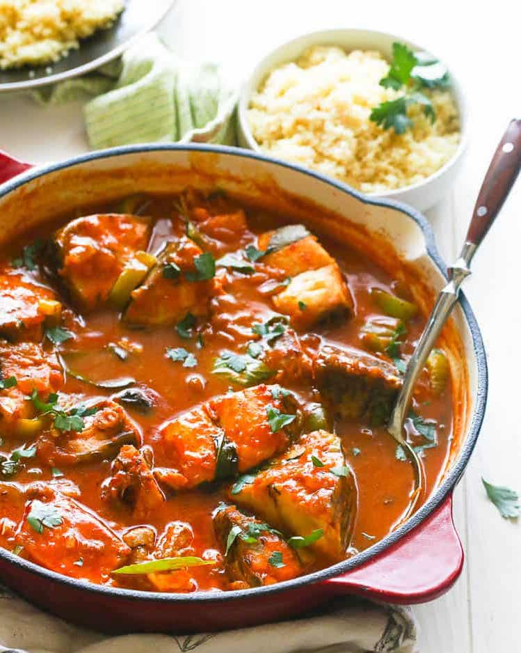

White Nile Fish

Description
Fresh, fragrant, and flavourful white fish and vegetable stew.
Ingredients
- 1 kg fresh fish (preferably Nile Perch)
- 2 large onions
- 1/2 cup oil
- 1 garlic bulb
- 3 green peppers
- 1 tsp salt
- 2 tbsp tomato paste
- 2 tomatoes
- 1 bunch of fresh coriander leaves
- 1 tbsp coriander seeds / crushed black pepper
- 1 lemon
- 1 cup sultanas
- 1 cup dried apricots (optional)
- 2 potatoes (optional)
- 1 carrot (optional)
Steps
- Slice the onions into rings and fry in oil in large pan.
- Crush garlic and add to pan with 2 pinches of salt.
- Add two tablespoons of tomato paste and stir until onion is golden.
- Add one tablespoon of coriander and one teaspoon of salt.
- Add juice from half of lemon and stir.
- Add fish to pan.
- Chop green peppers and put on top of fish as well as sliced tomatoes.
- If desired, add potatoes and/or carrots thinly sliced.
- Add sultanas and, if desired, apricots and cover pan.
- Chop coriander leaves and add to pan with pinch of salt.
- Cook even on stoke or bake in oven until fish cooked (approximately 20 minutes)